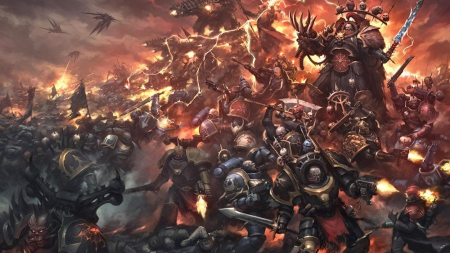
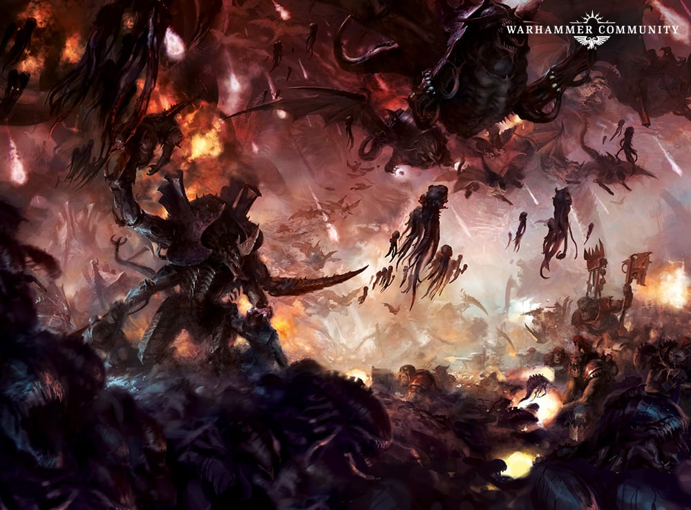
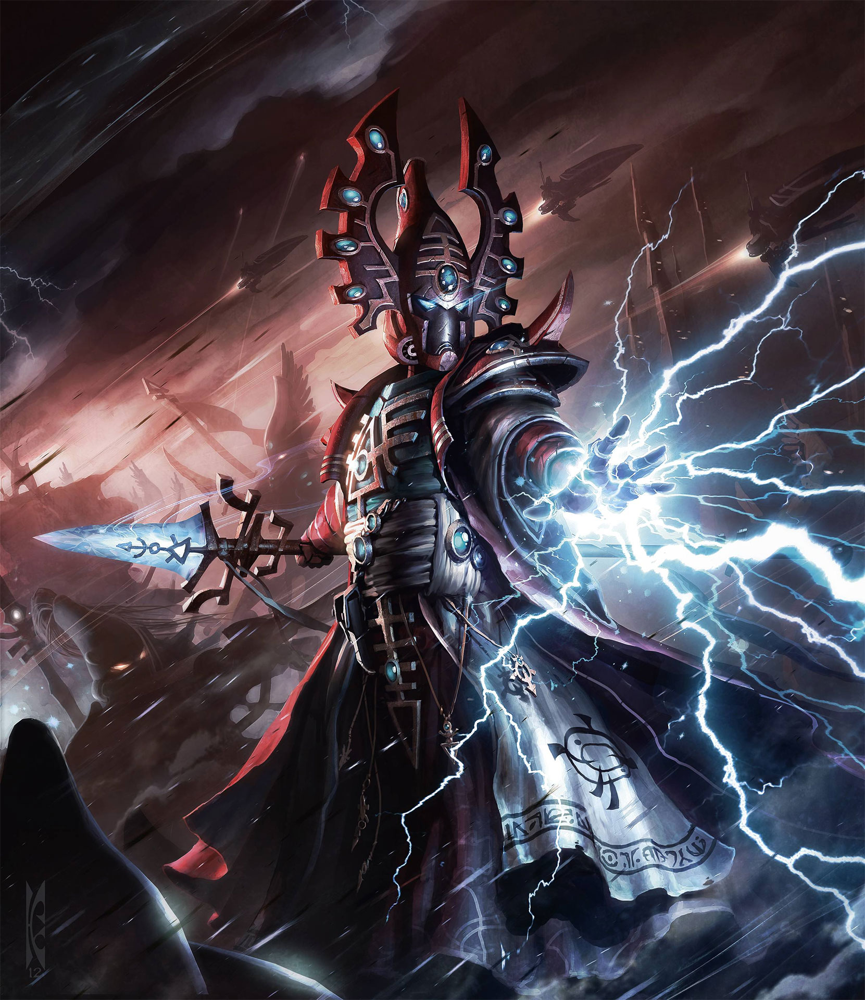

The Ultramarines, also known as the “blueberries,” loyal defenders of
the Imperium of Man under their Primarch Roboute Guilliman.
(Image from Games Workshop)

Chaos Space Marines, ex-loyalists who rage quit the Imperium and joined
the forces of Chaos. Now they fight with extra spikes, extra fire, and zero HR oversight.
(Image from Games Workshop)

Tyranids, the galaxy’s hungriest bugs. Imagine locusts, but they eat entire planets like Pringles.
They are one of the greatest threats among the Xenos.
(Image from Games Workshop)

Eldar, ancient space elves with powerful magic. They see the future, trip over it anyway, and blame everyone else.
Another major Xenos faction in the galaxy.
(Image from Games Workshop)